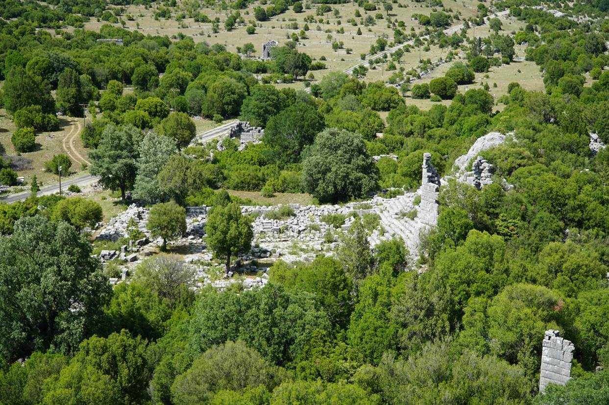
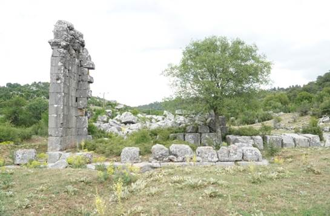
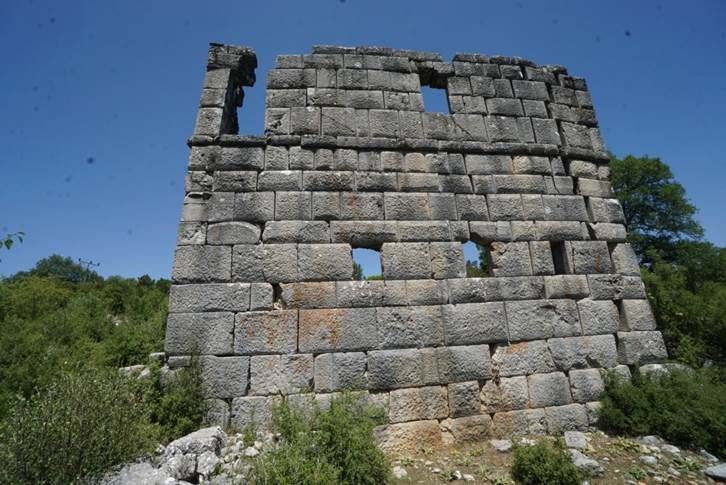

Adada Antik Kenti
Isparta İli, Sütçüler İlçesi, Sağrak Köyünde yer alan ve bölge halkı tarafından Karabavlu olarak adlandırılan alanda yer alır. Adada Antik Kenti’ne ait en erken kanıtlar Termessos kentinde ele geçen bir yazıttan ve antik dönem yazarlarının aktarımlarından öğrenilmektedir. Kentin ismi ilk olarak Termessos kenti ile yapılmış olan ve MÖ 2. yüzyıla tarihlendirilen bir antlaşma yazıtında geçmektedir. Antik metinlerde ise kentin adı ilk olarak MÖ 1. yüzyılda karşımıza çıkmaktadır. Strabon Geographika adlı eserinde Adada kentinin isminin diğer Pisidia kentleri içinde Artemidoros tarafından anıldığından söz etmektedir. Daha sonraki dönemlerde Ptolemaios ve Hierokles de kentin adından bahsederler. Adadalı paralı askerlerin Hellenistik kralların ordularında hizmet vermiş oldukları bilinmektedir. Kypros (Kıbrıs) ve Phonike’de (Fenike) bulunan Adadalı askerlere ait mezar taşları, kentin Hellenistik Dönem’de var olduğunun önemli kanıtları arasında gösterilmektedir. Adada Antik Kenti, Pisidia Bölgesi ile Pamphylia Bölgesi arasında önemli bir geçiş konumuna sahiptir. Adada kentindeki yapıların korunmuşluk durumu açısından Pisidia Bölgesi arkeolojisinin anlaşılmasına sağlayacağı katkılar açısından kenti önemli bir konumda olduğu görülmektedir. Adada kentinde çok sayıda dinsel ve kamusal yapılar bulunmaktadır. Bunlar arasında tiyatro, Roma İmparatorluk ve Bizans Dönemlerine ait konutlar ile mezar anıtlarını da barındıran nekropolis alanı büyük oranda görülebilmektedir. Adada’daki tapınaklar Pisidia Bölgesi’nin Roma İmparatorluk Dönemine ait tapınak mimarisinin bölge için önemli örnekleri arasındadır. Bunlar içerisindeki Traianus Tapınağı Pisidia Bölgesi’ndeki diğer tapınak örnekleri içerisinde en iyi tanınmış olanları arasındadır (Resim 2). Tapınak, İmparator Traianus’una adanmıştır ve MS 110-114 yılları öncesinde inşa edilmiş olduğu önerilmektedir. Adada’daki diğer önemli tapınak ise İmparatorlar Tapınağı olarak anılmaktadır (Resim 3). Bu tapınağın naos kapısının lentosu üzerindeki yazıtta, “Tanrı-İmparatorların iki kez rahipliğini yapmış olan, kurucu, kentin oğlu, Probusluk yapmış Nikomakhos’un oğlu Theodoros, bu tapınağı Tanrı-İmparatorlara ve kente, ksoanonlar ve heykelleriyle birlikte kendi parasıyla yaptırdı ve adadı” yazmaktadır. Tapınağının Traianus Tapınağı ile aynı yıllarda MS 114’den sonra inşa ettirildiği düşünülmektedir. “İmparatorlar ve Zeus Megistos-Serapis” tapınağı kentte ayakta duran bir diğer tapınaktır (Resim 4). Tapınağın architrave bloğu üzerindeki yazıtta “Tanrı Augustuslara ve Zeus Megistos Serapis’e ve vatana Tlamoas oğlu Antiokhos, iki kez İmparator Başrahibi, kurucu, kentin oğlu ve eşi Anna, Hoplon’un kızı, imparator başrahibesi ve oğulları Tlamoas ile Antiokhos, vatansever, kurucular ve kentin oğulları, tapınağı ve heykeleri, etrafındaki stoalar ve ergasterionlarla ve onlara ait tüm süsleri ve yer döşemeleri ile birlikte adayarak diktiler” yazıtı ayrıca dikkat çekmektedir. Tanrı-İmparatorlar ve Zeus Megistos Serapis’e tapınağının MS 160’lı yıllarda inşa ettirilmiş olduğu yazıtları sayesinde anlaşılmaktadır. Kentte daha önceki yıllarda kentte çalışma yürütmüş olan araştırmacılar tarafından Yönetici Sarayı olarak adlandırılan yapının doğusunda olması gerektiği önerilen bir diğer tapınak İmparatorlar ve Aphrodite tapınağıdır. Söz konusu alanda bulunan yazıtlı blokların, buradaki yuvarlak planlı bir tapınağın üst yapı elemanlarından olduğu önerilmektedir. Tapınağın üst yapı elemanlarında bulunan yazıtlarda ise İmparatorlar ve Zeus Megistos-Serapis tapınağında da adı geçen aile bireylerinin isimlerine yer verilmiş olması sebebi ile MS 150-16 yıllarından inşa edilmiş olduğu düşünülmektedir. Adada akropolisinin batısında kalan agora, Hellenistik ve Erken Roma İmparatorluk Dönemleri boyunca kentin ticari, idari ve dini merkezi olarak işlev görmüştür. Kentin ilk inşa sürecinde MÖ 2. yüzyılda planlanmış agoranın kuzeyinde çok katlı, iki nefli bir stoa, güneyde ise tek nefli bir stoa bulunmaktadır. Kentin önemli yapılarından bir diğeri açık hava toplantı yeridir ve akropolisin batısındadır. Toplam yirmi basamaklı bir merdiven görünümüne sahip olan toplantı yeri, kent halkının katıldığı demos’un belli zaman aralıklarında toplanarak kentin problemlerini çözmek amacıyla çalışmalar yürüttüğü alandır. Kentin ana caddesi agoranın batısında kalır. Bu caddenin her iki yanında ise amacı yönetim ve ticaret merkezleri olan stoalara ait izler görülür. Agoranın güneydoğu kısmında anıtsal bir çeşme bulunur. Tiyatro ise Adada’nın üzerinde yer aldığı düzlüğün kuzeybatısında tepe yamacına inşa edilmiştir. Tiyatronun caveası halen görülebilmektedir ve mevcut kapasitesinin 500 kişi olduğu düşünülmektedir. Kentte çok sayıda nekropolis alanı bulunur. Bunlardan kuzeybatıdaki nekropolis içerisinde küçük bir tapınak görünümüne sahip podyumlu bir mezar anıtı vardır. Adada Antik Kenti’nin farklı alanlarında kilise yapılarına da rastlanmaktadır. Bunlardan en büyük olanı kentin konumlandırıldığı vadinin batı kısmındadır. Üç nefli olan bu yapının batısında bir narteks ve atrium bulunur.


